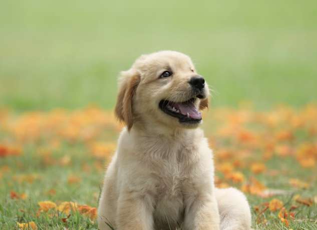
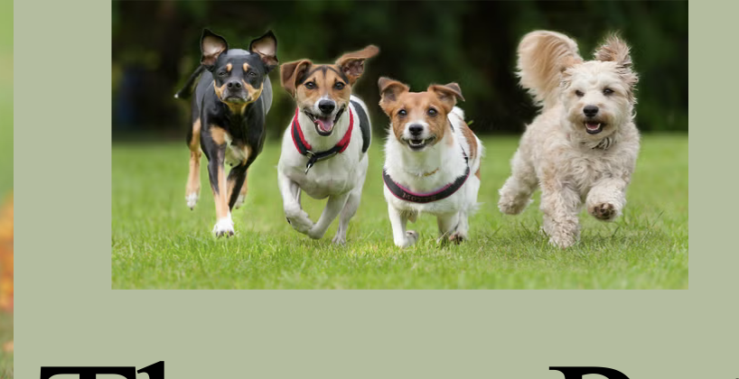
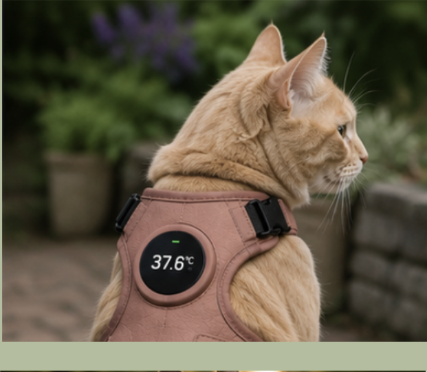
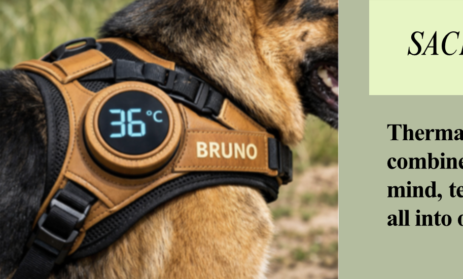
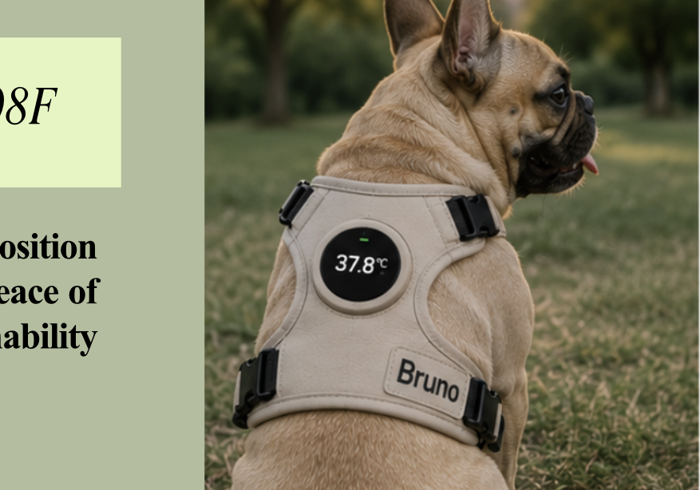
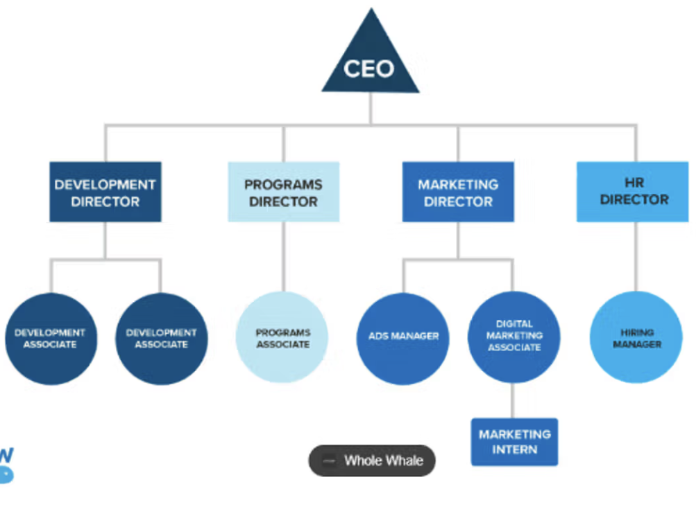

ThermaPet
SACE Number: 689308F
‘ThermaPet’s’ value proposition combines pet safety, owner peace of mind, technology and sustainability.
Read the business plan




Executive summary
ThermaPet is an Australian pet technology business developed to address the increasing risk of heat-related illness in dogs and cats during hot weather. The business provides a sustainable smart harness that monitors an animal’s temperature and connects to a mobile application, allowing owners to receive alerts about their pet’s condition. By providing owners with timely information, ThermaPet aims to reduce the risk of heat stress and heat stroke while reducing the anxiety associated with leaving pets during hot Australian conditions.
The business has developed its product through design thinking, experimentation and continuous refinement of its value proposition. The original concept of a temperature-detecting harness was developed into a sustainable smart harness using bamboo leather and recycled plastics. This differentiation provides ThermaPet with a competitive advantage by combining animal safety, technology and environmental responsibility. The target market has also expanded from dog owners to include cat owners, increasing the potential customer base while maintaining a strong focus on pet welfare.
ThermaPet will generate revenue through two complementary streams: direct sales of the smart harness and a subscription model for enhanced application features. Core temperature monitoring and alerts will remain accessible, while premium features such as predictive insights, historical data and personalisation will be offered through a subscription. This model provides an initial source of revenue from product sales while creating the potential for recurring income and long-term customer relationships.
Marketing and distribution will focus on social media, particularly Instagram, alongside partnerships with pet retailers. Social media will be used to build brand awareness, demonstrate the benefits of the product and preview premium application features, while pet retailers will provide customers with a physical channel through which they can discover and purchase ThermaPet. The business will also establish partnerships with sustainable material suppliers, legal professionals and cybersecurity specialists to support responsible and secure operations.
Several risks have been identified through business intelligence and strategic analysis. Cybersecurity is a significant concern because the product relies on an application and connected temperature-monitoring technology. ThermaPet will therefore prioritise cybersecurity expertise and regular technology updates to protect customer information and maintain trust. Legal and ethical risks will also be addressed through legal partnerships and clear safety information. The accompanying paper handbook and guidance within the application will explain correct product use and emphasise that temperature monitoring does not make it safe to leave pets in dangerous heat or on surfaces that may burn their paws.
Sustainability will remain an important component of ThermaPet’s strategy. The use of bamboo leather and recycled plastics reduces reliance on less sustainable materials and strengthens the brand’s environmental positioning. Maintaining sustainable sourcing across future products and suppliers will be essential to protecting customer trust and ensuring that environmental claims remain credible.
Overall, ThermaPet combines technology, sustainability and animal welfare to address a growing concern for Australian pet owners. Through a customer-focused value proposition, diversified revenue streams, strategic partnerships and accessible marketing channels, ThermaPet aims to establish a trusted pet technology brand that reduces the risk of heat-related illness, provides owners with greater peace of mind and achieves sustainable long-term business growth.
Vision, purpose and values
A customer interview with an owner of two French bulldogs stated, “we need more solutions for monitoring pets during heat waves” influencing the creation of ‘ThermaPet’. ‘ThermaPet’ will develop into a trusted Australian pet temperature detecting harness brand. The brand was originally designed for dog owners, but following a survey on the platform ‘Survey Monkey’ it was discovered that cat owners could also benefit from the product, so the target demographic was expanded. Our purpose is to give pet owners greater confidence during increasingly frequent hot weather events through us innovate technology which provides accessible, live information regarding the animal’s temperature status. Animal welfare, sustainability, customer wellbeing, accessibility, and responsibility all remain ‘ThermaPet’s’ core values.
Products and services
‘ThermaPets’ main product is a sustainable temperature detecting pet harness. Research into ‘Wiringo’, an electrical firm established that a temperature sensor could be embedded within the harness and communicate to a mobile app influencing my decision to do so. This integration of technology allows owners to monitor their animal’s temperature and receive alerts when concerning fluctuations occur. The world needs ‘ThermaPet’ as hot conditions create major risks for companion animals. An additional handbook regarding how to use the app is included with purchase. These better suits the needs of older Australians in the digital age, as confirmed by an eye-opening interview with an 89-year old who stated ‘I am worried about how to install apps’. ‘ThermaPet’s’ value proposition combines pet safety, owner peace of mind, technology and sustainability.
Registration details
Proposed business name: ThermaPet
Business structure: Sole trader
ABN: 23856702176
ACN: 496264961
Registered business address: Swifts Creek East Rd, Victoria, 3896
Location and outlets
Australia is a stable, high-income market with a fast set up process and strong trade links to the Asia-Pacific region shaping my decision to complete my business startup in the country. ‘ThermaPet’ will begin its operations in Australia, with its product-development operations being based in Victoria as they are a major national hub. The product will be sold through an online store and the selected Australian pet retailers ‘PetBarn’ and ‘PetStock’. As over 2 million businesses currently connect with customers through Instagram, I was influenced to use the social media platform supporting customer awareness and online sales.
Structure and ownership
A ‘Pty Ltd’ structure could provide an opportunity for separation between ‘ThermaPet’ and its owners, supporting our future investment and expansion. Research into the risks of a partnership business model guided my judgement for ‘ThermaPet’ to operate as a sole trader. The business assets and trades will be individually owned.
Operations
Sourcing supplies sustainably is crucial to the integrity of ‘ThermaPet’ as influenced by a conversation with an Environmental Social Governance professional at ‘ERM’ where it was stated that “sustainable sourcing can help businesses mitigate risks related to environmental regulations and supply chain disruptions caused by climate change”. Research into sustainable sourcing at a company called Recycled Plastics Australia (RPAU) identified recycled plastics can be easily collected, sorted, cleaned, and used in products. The Sustainability Award Organisation revealed that bamboo is naturally biodegradable, guiding me to use it in the products material component, upholding to ThermaPet’s value proposition and additionally making the harness more desirable for customers as they ethically feel obliged to help the environment increasing sales and revenue. Warehousing and inventory systems will additionally be required for the business start-up for the storage of supplies and to manufacture the product efficiently, maximising time and capital. As research concludes that Instagram has over 3 billion monthly active users worldwide, it was reasonable to conclude marketing Thermapet through the platform should be done. Customers will interact with Thermapet through the website, the pet retailers mentioned above and be promoted by veterinarians nationwide.
Risk Management
Harvard Business School states that “effective risk management is crucial to long term business success” highlighting the need to do so in ThermaPet. Research into Queensland Business showed me that potential financial risks regarding Thermapets startup include limited cashflow, loans investors being unapproved, and changing rates from suppliers. Legal risks include having a lack of knowledge for understanding contracts and lease agreements, a failure to get the correct business licences, and not handling customer information correctly to ensure privacy obligations are met. These present the greatest threats. Influenced by these risks, it was identified that a lawyer and accountant must be hired to successfully run ThermaPet. Competitor risks identified included having too many competitors in the business location, to ensure this does not occur, the location of Victoria was chosen because it has a high rate of pet ownership, strong retail access and fewer direct competitors compared with alternative locations. However, while this mitigates the risk, if customers cannot easily access this location or the pet stores that supply the product, there is a risk of insufficient sales and therefore capital. KPMG states that “the Australian Cyber Security Centre received over 84,000 cybercrime reports, with an average reportable cost of $97,200 per report for medium-sized businesses”. NCSC NZ additionally states “social media applications have third party access to information that is on the devices associated with the social media account” revealing that while marketing on Instagram may be beneficial to ThermaPet’s brand awareness, it also poses risks, and an IT expert should be consulted to minimise these.
Intellectual property protection
It is crucial for ThermaPet to not share any product or branding ideas before the IP is registered as it can prevent ownership from being claimed. As infringements and issues can arise from not registering a business’s IP correctly a legal expert will be hired as mentioned previously who will provide guidance on intellectual property protection.
Legal considerations and insurance requirements
Establishing a successful enterprise requires navigating complex legal requirements and considerations. Fair trading laws must be understood so the business operates fairly while informing and protecting customers. ThermaPet will comply with Australian tax laws including GST, PAYG, and land tax for the site where operations will be conducted. Employment law additionally states ThermaPet must ensure employees are paid correct wages, work health and safety laws are abided by, and superannuation requirements are met. As a sole trader, ThermaPet is legally responsible for all aspects of the business, including debts and losses which may incur in its running. This decision was made as partnership business structures can carry additional risks as the law generally treats the partners as personally responsible for the business’s debts and obligations. Workers compensation insurance is the only business insurance legally required in Australia. It is mandatory ThermaPet complies with this as employees such as product developers, lawyers, and IT experts will be employed in the business startup.
Sustainability impacts
As seen in ERM, sustainability is a competitive advantage and will allow for long term business growth. Sustainability is positively seen in ThermaPet’s product design regarding the use of bamboo leather and recycled plastics. Cutting emissions and improving efficiency across all operations will be done by ThermaPet offering hybrid working options for employees so they can work part time from home and come into the office and only sourcing from suppliers who share these values.
The market
Globally, dogs are the most popular pet, present in around 1 in 3 homes and almost a quarter of pet owners have a cat. The pet industry association has stated that on average, owners now spend around $3,00 per dog and $2,100 per cat, highlighting the growing trend of treating pets with the same care and comfort as family members. This rise in ‘human-style’ pet care reflects a shift in how Australians value their animals. Around 35% of pet owners are now purchasing their pet supplies and products online – a leap from just 20% in 2019. This reinforces that ThermaPet will be marketing and selling majority of the harnesses online, increasing customer acquisition and sales. The pet care market size reached $181.9 Billion in 2025 with a compound annual growth rate of 5.9%. This data highlights that ThermaPet’s customer segments are not only derived from Australia, but internationally also meaning that sales may benefit and so will capital. Customer segments include dog owners, cat owners, veterinarians, pet stock, pet barn, and pet shelter organisations like the RSPCA who seek to find solutions to pet heat stroke during hot summer environments. Competitors include FitBark and Fi, companies who offer smart dog collars with GPS tracking and provide health related data, however, they do not include ThermaPet’s main feature, the temperature alerts and detection meaning there is differentiation. Sales and marketing will be done through online purchasing, selling the product through pet retailers, and promoting it on Instagram and through vet clinics backed by research into the benefits of this.
The strategy
Key performance indicators (KPI) are a performance measurement on the efficiency of a business’s activities in achieving purposes. Following conversation with a worker at ERM, appropriate key performance indicators, short term, and long-term targets were set for the business:
KPI
| Measure | Target |
|---|---|
| Annual sales revenue | $150,000 by Year 2 |
| Annual sales revenue | $500,000 by Year 5 |
| Net profit margin | 10% by Year 2; 20% by Year 5 |
| Annual revenue growth | Minimum 20% per year after Year 2 |
| Customer satisfaction | Over 90% positive ratings through app |
| Customer retention | Over 70% annually (app subscriptions) |
| Product reliability | Over 95% successful temperature readings |
| Market share | 2% of Australia’s smart pet wearable market by Year 5 |
| Retail distribution | 20 Australian retail locations by Year 2; 100 by Year 5 |
| Sustainability | Over 80% of harness materials sourced from recycled or renewable materials |
The finance
| Start-up requirement | Estimated cost |
|---|---|
| Product research/development | $15,000 |
| Temperature-sensing technology and app development | $20,000 |
| Initial inventory and manufacturing | $25,000 |
| Website and e-commerce platform | $5,000 |
| Marketing and promotion | $10,000 |
| Legal and IP registration | $5,000 |
| Warehouse/equipment set up | $8,000 |
| Insurance and compliance | $2,000 |
| Working capital/cash reserve | $10,000 |
| Total funding requirement | $100,000 |
| Line | Year 1 | Year 2 | Year 3 |
|---|---|---|---|
| Harness sold | 600 | 1,000 | 1,750 |
| Sales revenue | $90,000 | $150,000 | $262,500 |
| Cost of goods sold | $42,000 | $80,000 | $140,000 |
| Gross profit | $48,000 | $80,000 | $140,000 |
| Operating expenses | $65,000 | $65,000 | $85,000 |
| Net profit/loss | -$17,000 | $15,000 | $55,000 |
Assumption that each harness is sold for $150, with an average variable cost of $70 per harness
Cash flow
| Line | Year 1 | Year 2 | Year 3 |
|---|---|---|---|
| Opening cash | $10,000 | $13,000 | $28,000 |
| Cash inflows from sales | $90,000 | $150,000 | $262,500 |
| Operating and production outflows | -$87,000 | -$135,000 | -$207,500 |
| Closing cash balance | $13,000 | $28,000 | $83,000 |
| Line | Year 1 | Year 2 | Year 3 |
|---|---|---|---|
| Sales revenue | $90,000 | $150,000 | $262,500 |
| Less: COGS | ($42,000) | ($70,000) | ($122,500) |
| Gross profit | $48,000 | $80,000 | $140,000 |
| Marketing | ($15,000) | ($12,000) | ($15,000) |
| Wages/contractors | ($20,000) | ($25,000) | ($35,000) |
| Rent/warehouse | ($8,000) | ($8,000) | ($10,000) |
| Technology/app | ($10,000) | ($7,000) | ($8,000) |
| Insurance/legal/admin | ($7,000) | ($6,000) | ($7,000) |
| Other operating expenses | ($5,000) | ($7,000) | ($10,000) |
| Net profit/(loss) | -$17,000 | $15,000 | $55,000 |
| Net profit margin | -18.9% | 10.0% | 21.0% |
| Assets | $ |
|---|---|
| Cash | $28,000 |
| Inventory | $25,000 |
| Equipment | $30,000 |
| Technology/IP | $20,000 |
| Total assets | $103,000 |
| Liabilities & Equity | $ |
|---|---|
| Business loan | $40,000 |
| Accounts payable | $8,000 |
| Total liabilities | $48,000 |
| Owner's equity | $40,000 |
| Retained profit | $15,000 |
| Total equity | $55,000 |
| Total liabilities + equity | $103,000 |
Organisational chart

References
- 7 Reasons for setting up a business in Australia | acclime 2022, Acclime Australia, viewed 25 August 2026, <https://australia.acclime.com/guides/reasons-for-setting-up-business/>.
- admin 2025, Latest industry stats behind Australia’s $33 billion pet industry - Pet Industry Association Australia, Pet Industry Association Australia, viewed 28 August 2026, <https://piaa.org.au/latest-industry-stats-behind-australias-33-billion-pet-industry/>.
- Australian Taxation Office 2023, Business structures - key tax obligations, Australian Taxation Office, viewed 28 August 2026, <https://www.ato.gov.au/businesses-and-organisations/starting-registering-or-closing-a-business/starting-your-own-business/business-structures-key-tax-obligations>.
- Business operations n.d., DealHub, viewed 25 August 2026, <https://dealhub.io/glossary/business-operations/>.
- Cyber security for the mid market 2024a, KPMG, viewed 27 August 2026, <https://kpmg.com/au/en/services/mid-market-private/cyber-solutions-for-the-mid-market.html>.
- Employment, SBT 2022, Managing risk when starting up, www.business.qld.gov.au, viewed 26 August 2026, <https://www.business.qld.gov.au/running-business/risk/starting>.
- ERM 2019, ERM - environmental resources management (ERM), Erm.com, viewed 26 August 2026, <https://www.erm.com/>.
- full bio, RL 2026, Types of Business Insurance, Xero, viewed 28 August 2026, <https://www.xero.com/au/guides/types-of-business-insurance/?utm_source=GOOGLE&utm_medium=cpc&utm_campaign=AU+-+NB+-+MF+-+SMB+-+Guides+Tier+2&utm_content=Types+Of+Business+Insurance&utm_term=types+of+business+insurance&ds_kid=146713081&gclsrc=aw.ds&gad_source=1&gad_campaignid=21839879471&gbraid=0AAAAAD0EBI24yG60F6bEktsVE9h0RnJfh&gclid=EAIaIQobChMIvaeDq83ClgMVmFwPAh0q9zgPEAAYAiAAEgIgpfD_BwE>.
- Gibson, K 2023, What is risk management & why is it important?, Business Insights Blog, Harvard Business School, viewed 26 August 2026, <https://online.hbs.edu/blog/post/risk-management>.
- Health for Animals 2022, HealthforAnimalsGlobal trends in the pet population |, HealthforAnimals, viewed 28 August 2026, <https://healthforanimals.org/reports/pet-care-report/global-trends-in-the-pet-population/>.
- Home n.d., RSPCA South Australia, viewed 28 August 2026, <https://www.rspcasa.org.au>.
- Legal considerations when starting a business in South Australia - wadlow solicitors 2024b, Wadlow.com.au, viewed 28 August 2026, <https://www.wadlow.com.au/articles/starting-a-business-sa-law>.
- Legal considerations when starting a business in South Australia - Hume Taylor & Co 2023, Hume Taylor & Co, viewed 25 August 2026, <https://www.humetaylor.com.au/site/2023/05/10/legal-considerations-when-starting-a-business-in-south-australia/>.
- Petbarn St Kilda - Acland Street Village St Kilda 2026a, Acland Street Village St Kilda, viewed 25 August 2026, <https://aclandstreetvillage.com.au/trader/petbarn-st-kilda/>.
- Petstock AU | Petstock Foundation n.d., www.petstockgroup.com.au, viewed 25 August 2026, <https://www.petstockgroup.com.au/page/petstock>.
- Petstock Australia 2025a, Petstock.com.au, viewed 25 August 2026, <https://www.petstock.com.au/pages/petstock-rewards?srsltid=AfmBOorC3eZmNiUfrRO85I2RPUVXocahZKLFR3b5JvOFNuJlnvwInle9>.
- RPAU home n.d., www.rpau.com.au, viewed 26 August 2026, <https://www.rpau.com.au>.
- Social media apps and cyber security risk: Discussion points for decision makers 2025b, NCSC NZ, viewed 27 August 2026, <https://www.ncsc.govt.nz/protect-your-organisation/social-media-apps-and-cyber-security-risk/>.
- Solo, A 2025, Partnership disadvantages: Is a partnership the right structure?, Sprintlaw.com.au, Sprintlaw AU, viewed 28 August 2026, <https://sprintlaw.com.au/articles/partnership-disadvantages-is-a-partnership-the-right-structure/>.
- Sustainability Award 2025, Bamboo as a sustainable fabric: Pros, cons, and its environmental impact, Sustainability Award - Recognising & rewarding environmental responsibility, viewed 26 August 2026, <https://sustainabilityaward.org/is-bamboo-a-sustainable-fabric/>.
- Topic: Instagram 2020, Statista, viewed 26 August 2026, <https://www.statista.com/topics/1882/instagram/?srsltid=AfmBOooKoQmdmTzTx_nDe_73BzmfAe5nqgJzPJVyo2sUQ_VSKcL9Bey9>.
- Victoria | flag, facts, maps, & points of interest n.d., Encyclopedia Britannica, viewed 25 August 2026, <https://www.britannica.com/place/Victoria-state-Australia>.
- 2026b, Google.com, viewed 25 August 2026, <https://www.google.com/url?sa=t&source=web&rct=j&opi=89978449&url=https://business.instagram.com/%3Flocale%3Den_GB&ved=2ahUKEwiu9aDc-bqWAxXETWwGHYqeMoQQFnoECCYQAQ&usg=AOvVaw0jDH_q5C3mSeo2znH8GX_4>.